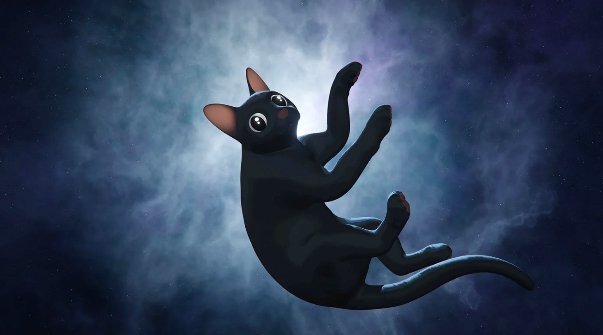
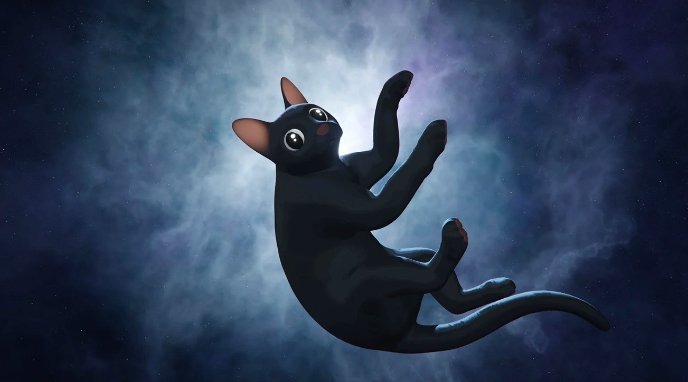

Guion
El guion de FLOW es bastante minimalista y visual, ya que la película no tiene diálogos. En lugar de palabras, la historia se desarrolla a través de la animación, la música y la expresión corporal de los animales, lo que le da un tono más contemplativo y simbólico. 1. ESTRUCTURA NARRATIVA Flow sigue una estructura de viaje donde el gato protagonista se ve forzado a dejar su hogar tras una inundación y emprender una travesía en un bote. En el camino, se encuentra con otros animales (un perro, un capibara, un lémur y un ave secretaria), con quienes debe aprender a convivir y cooperar para sobrevivir. El conflicto principal radica en la tensión entre los animales, ya que cada uno tiene su propia forma de actuar y su instinto de supervivencia. 2. EL PROTAGONISTA El gato es independiente, solitario y desconfiado al principio. Prefiere estar solo y no quiere compartir su espacio con los otros animales. A lo largo del viaje, enfrenta desafíos que lo obligan a cambiar su actitud y aceptar la ayuda de los demás. Su evolución emocional es el eje central del guion, mostrando cómo pasa de la desconfianza a la aceptación del grupo. 3. EL MENSAJE DEL GUION La película utiliza la naturaleza y los instintos animales como una metáfora de la cooperación y la convivencia en tiempos difíciles. A través del comportamiento de los animales, el guion nos habla sobre la importancia de la comunidad y cómo nadie sobrevive solo. También se pueden interpretar temas ambientales, como el impacto de los desastres naturales y la adaptación a un mundo cambiante. 4. FINAL ABIERTO Y REFLEXIVO Flow no tiene un final típico con una gran resolución. En lugar de eso, deja al espectador con una sensación de continuidad y reflexión, como si la historia pudiera seguir más allá de la pantalla. A pesar de ser un guion sin diálogos, su impacto emocional es fuerte gracias a la animación y la música. Es una historia simple pero con un profundo significado sobre la supervivencia y la conexión con los demás.El guion de Flow (2025) es bastante minimalista y visual, ya que la película no tiene diálogos. En lugar de palabras, la historia se desarrolla a través de la animación, la música y la expresión corporal de los animales, lo que le da un tono más contemplativo y simbólico.
Imágenes
 
